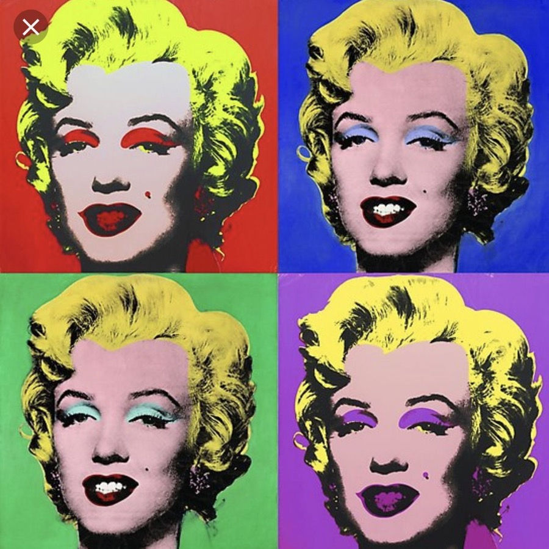

To start with, so many of us have heard an old saying: “Beauty is in the eye of the beholder”.
It somehow relates to fine art since scholars agree that the term equals to the “art for art’s sake”.
With that being said, this notion was used to describe artworks that highlighted the aesthetic values
rather than to express cultural and historical events.
The term of fine art was extremely popular in the 19th century. At the time, most artists
emphasised more in utilising art as a freedom of expression. They played an important part as
the creative innovation agents, allowing them detach from utilitarian works or commission that
might be categorised into decorative or applied art.
Fine art may include painting, printmaking, and sculpture as it’s rooted in design-based and
drawing works. But today’s depiction of fine art is more than that. It now also covers photography,
filmmaking, conceptual art in various mediums. However, as long as it contains creative expression,
some artworks might be defined as fine art; even though, it sometimes evokes an emotion or criticises social issues.
All in all, looking back to the proverb of “beauty is in the eye of the beholder”, defining fine art
is complex and somewhat subjective. It relies on the viewer, so if it inspires you or captivates your
head and heart because of the sublime, it can be considered as fine art.
"Art enables us to find ourselves and lose ourselves at the same time."
Thomas Merton
The History of Fine Art
Historically, fine art can be found from the Acheulian period of ancient art. Some notable artworks include proto-sculpture like a basaltic figurine of the Venus of Berekhat Ram (230,000-700,000 BCE) and a quartzite figurine of the Venus of Tan-Tan (200,000-500,000 BCE). Also, ancient civilisations did cave paintings in Chauvet Cave (c.30,000 BCE), Lascaux, Altamira, Pech-Merle, and Cosquer.
Proto-sclupture of the Venus of Tan-tan | Source: kunstvensters.com
Ancient fine art work in Chauvet Cave | Source: smithsonianmag.com
During the era of ancient Mediterranean civilisations, along with Greek, Roman, Byzantine, Carolingian, Ottonian, Romanesque and Gothic period, fine artists were considered as skilled workers. They are generally carvers or proficient interior decorators. It was only until the Renaissance era, the "artist" profession was ushered to a higher social status in society, receiving acknowledgement in the design realm.
Lamentation or Mourning of Christ painting of Giotto (1906) | Source: britannica.com
However, the idea of fine art just appeared in the 18th century. The French philosopher Charles Batteux was among the first to specify fine artwork in his work entitled Les Beaux-Arts réduits à un même Principe ("The Fine Arts Reduced to a Single Principle") in 1746. In this text, the use of the word “fine” with “art” is derived from the French “Beaux Arts”, simply meaning delicate, excellent, and finely made.
The Classification of Fine Art
The book of Les Beaux-Arts réduits à un même Principe by Charles Batteux | Source: edition-originale.com
Les Beaux-Arts réduits à un même Principe of Charles Batteux also conveyed the categorisation of what kind of works under the umbrella of fine art based on the idea of beauty and good sense. He suggested six fine art, which are painting, sculpture, architecture, music, dance, literature.
The portrait of Ricciotto Canudo and his publication text | Source: zhihu.com
The development of fine art occurred in the 20th century, with the publication of Ricciotto Canudo entitled The Manifesto of the Seven Arts. He argued for cinematography's accession to include in fine art. As a consequence of the attempts of Canudo, cinematography was known as the seventh fine art.
Most Famous Fine Artists
Marilyn Monroe Diptych of Andy Warhol | Source: bunow.com
In this modern and contemporary art, fine artists gained so much popularity than ever. Andy Warhol, the founding father of the Pop Art movement in the 1960s, is one of the most prominent fine artists. He is best known for the diptych of Marilyn Monroe, Elvis Presley, and producing captions for Campbell's Soup. Till now, he remains among the strongest characters in art as we can see his reproduction artworks in some retro style and design.
Les Demoiselles d'Avignon of Pablo Picasso (1907) Source: moma.org
Another most influential fine artist is the leading figure of Cubism, Pablo Picasso. Not only that, he also led numerous artistic movements, such as Surrealism, Expressionism and many more. Also, he didn’t restrict his artworks in merely painting forms. Picasso also created some sculptures, prints, and ceramics as a self-expression. Even until his death in 1973, he managed to produce approximately 50,000 artworks. Just the same as Warhol, Picasso also continued to rouse the creativity of newer generations to come.
"Art is the lie that enables us to realize the truth."
Pablo Picasso